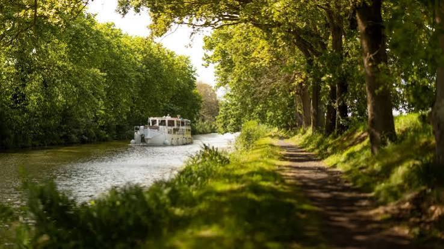

Canal
du Midi


⟹ Patrimoine mondial UNESCO ⟸

Un rêve antique de relier les deux mers. L'idée de joindre l'Atlantique à la Méditerranée sans contourner la péninsule Ibérique par le détroit de Gibraltar est envisagée depuis l'Antiquité : les Romains, puis plus tard Charlemagne, François Ier et Henri IV auraient étudié la question sans jamais la résoudre. Le principal obstacle n'est pas seulement le creusement d'une tranchée : il faut surtout alimenter en eau, en permanence, un canal franchissant le seuil de Naurouze, ligne de partage des eaux entre les bassins atlantique et méditerranéen, un problème jugé insoluble depuis l'époque romaine.
Pierre-Paul Riquet, un fermier de la gabelle devenu ingénieur. Né le 29 juin 1609 à Béziers, Pierre-Paul Riquet, baron de Bonrepos, fait fortune comme receveur général des gabelles du Languedoc, chargé de la collecte de l'impôt sur le sel. Sans formation d'ingénieur, il observe pendant plus de quinze ans le relief et l'hydrologie de la Montagne Noire depuis son château de Bonrepos, où il fait réaliser des maquettes. Il s'entoure de techniciens locaux, dont le fontainier Pierre Campmas, et s'appuie sur les observations de François Andréossy, qui avait étudié en Italie du Nord les écluses ovoïdes du canal de la Brenta.
Le mémoire à Colbert et l'épreuve des experts (1662-1666). Le 15 novembre 1662, Riquet adresse à Colbert, ministre de Louis XIV, un mémoire exposant son projet de canal. Le 18 janvier 1663, un arrêt du Conseil du Roi crée une commission d'experts, comprenant notamment Bourtheroulde de Bourgneuf, seigneur du canal de Briare, et Louis Nicolas de Clerville, commissaire général des fortifications. En 1665, la commission rend un avis favorable mais exige une rigole d'essai : en octobre 1665, Riquet fait creuser cette rigole pour amener l'eau de la Montagne Noire jusqu'au seuil de Naurouze, démontrant la faisabilité technique du projet. Le 7 octobre 1666, un édit royal signé par Louis XIV autorise enfin le creusement du « canal royal de Languedoc ».
Un financement partagé, une fortune engagée. Le financement du chantier associe la monarchie, les États de Languedoc et Riquet lui-même, qui engage une part considérable de sa fortune personnelle dans l'entreprise, au point de s'endetter lourdement. Le coût total est estimé à environ 17 millions de livres de l'époque — le salaire annuel d'un bon artisan étant alors d'une centaine de livres —, soit un montant que les historiens comparent aujourd'hui à près d'un milliard d'euros.
Un chantier hors norme (1667-1681). Les travaux débutent en janvier 1667 avec le creusement des rigoles d'alimentation ; en avril commence le barrage de Saint-Ferréol, en présence de l'archevêque de Toulouse pour la pose de la première pierre ; dès septembre, le creusement du canal proprement dit démarre à Toulouse. Le chantier emploie jusqu'à 12 000 personnes, hommes et femmes, contre 2 000 au départ. Fait rare pour l'époque, Riquet loge, nourrit, équipe et rémunère généreusement ses ouvriers, leur assurant des salaires élevés et le paiement des jours de fête et de pluie, ce qui suscite l'irritation d'autres employeurs de la région.
Saint-Ferréol et le système d'alimentation, clé de voûte de l'ouvrage. Le barrage-réservoir de Saint-Ferréol, établi sur le Laudot et complété plus tard par le réservoir du Lampy et un réseau de rigoles de la Montagne et de la plaine, permet de capter puis d'acheminer les eaux de la Montagne Noire jusqu'au seuil de Naurouze, point de partage culminant à environ 189-194 mètres d'altitude. De là, les eaux se répartissent vers les deux versants du canal, atlantique et méditerranéen. Ce système hydraulique, l'un des plus ingénieux de son temps, reste la contribution la plus admirée de Riquet à l'histoire des techniques.
De Toulouse à Castelnaudary : le versant atlantique. Les 17 novembre 1667, le Parlement de Toulouse, les capitouls et l'archevêque assistent à la pose des premières pierres de l'écluse de Bazacle. Le tronçon de Toulouse à Naurouze puis à Castelnaudary est réalisé entre 1667 et 1674, franchissant le seuil de Naurouze à partir de 1669. En 1670 est construit le bassin de l'embouchure à Toulouse ; en 1674, le canal est achevé et mis en eau jusqu'à Castelnaudary.
De Castelnaudary à l'étang de Thau : le versant méditerranéen. Le second versant progresse en parallèle : dès juillet 1667, la première pierre du port de Sète, choisi comme débouché méditerranéen, est bénie au Cap de Sète. En 1675, le canal est achevé jusqu'à l'étang de Thau depuis Béziers. En 1676 sont construits l'écluse ronde d'Agde et le pont-canal du Répudre, premier pont-canal de l'histoire du génie civil moderne.
Le tunnel du Malpas et l'escalier de Fonseranes, prouesses finales. En 1679-1680, le tunnel du Malpas, creusé sous la colline d'Ensérune, devient le premier tunnel-canal navigable d'Europe : jusque-là, personne n'imaginait possible de percer une montagne pour y faire passer un canal. En 1680, Riquet achève à Béziers l'escalier d'écluses de Fonseranes, ensemble de huit bassins et neuf portes permettant de franchir un dénivelé de 13,60 mètres sur 300 mètres de long (jusqu'à 21,6 mètres en comptant la dernière écluse vers l'Orb). Riquet lui-même le baptise « l'escalier de Neptune » et l'offre en hommage à sa ville natale, avec vue sur la cathédrale et les remparts ; sept de ses écluses ovoïdes sont aujourd'hui encore en service.
La mort de Riquet et l'achèvement de l'œuvre (1680-1682). Pierre-Paul Riquet meurt à Toulouse le 1er octobre 1680, à 71 ans, alors qu'il ne manque plus qu'une lieue — moins de 5 kilomètres — pour achever le canal. Son fils Jean-Mathias-de Riquet poursuit l'entreprise. Après une inspection favorable de d'Aguesseau, intendant du Languedoc, le voyage inaugural a lieu le 15 mai 1681 : un convoi de vingt-cinq barques relie Toulouse à l'étang de Thau. La réception définitive des travaux n'intervient qu'en décembre 1682, le canal étant alors pleinement opérationnel après quatorze années de chantier et environ sept millions de mètres cubes de terre déplacés à la main.
Vauban consolide l'ouvrage. Dès la fin du XVIIe siècle, des faiblesses apparaissent : crues, envasement, ruptures de digues menacent la pérennité du canal. Vauban fait étudier et réaliser d'importants travaux de renforcement — nouveaux aqueducs permettant aux rivières de passer sous le canal, épanchoirs, amélioration de la rigole de la Montagne et augmentation des capacités de stockage de Saint-Ferréol — qui assurent la stabilité durable du système.
Deux siècles d'activité économique intense. Pendant près de deux cents ans, le canal transporte voyageurs et marchandises : céréales, vins et eaux-de-vie, textiles, bois, matériaux de construction, ou encore le marbre rose de Caunes-Minervois. Un service de « barques de poste » assure le transport des voyageurs entre les principales étapes, tandis que le halage est assuré depuis les chemins de rive par des chevaux. Ports, auberges, magasins et ateliers se développent tout au long du tracé, faisant du canal une véritable artère économique du Languedoc.
Du « canal royal de Languedoc » au « canal des Deux-Mers ». Connu à l'origine comme « canal royal de Languedoc », l'ouvrage prend le nom de canal du Midi à l'époque révolutionnaire. Le canal principal relie Toulouse à l'étang de Thau sur environ 240 kilomètres. Son réseau s'étend ensuite : canal de la Robine vers Narbonne et Port-la-Nouvelle, canal de Jonction, canal de Brienne à Toulouse, puis, au XIXe siècle, canal latéral à la Garonne (achevé en 1856, sur 193 kilomètres), qui prolonge la voie jusqu'à Bordeaux et l'Atlantique. L'ensemble forme finalement le « canal des Deux-Mers », un réseau continu d'environ 360 kilomètres.
Le choc du chemin de fer et le déclin du trafic commercial. À partir du milieu du XIXe siècle, le rail concurrence durement la navigation commerciale, plus lente. Le canal conserve néanmoins un rôle dans le fret et l'irrigation pendant plus d'un siècle, tout en faisant l'objet de modernisations ponctuelles. Le déclin s'accélère au XXe siècle : les dernières barques de fret commercial empruntent le canal vers 1989-1990, mettant fin à trois siècles de navigation marchande.
La renaissance par le tourisme fluvial. Dès les années 1960-1980, un nouvel usage se développe : la navigation de plaisance. En 1984 est inaugurée la pente d'eau, ouvrage permettant de raccourcir le temps de franchissement de certaines écluses. Le canal devient progressivement l'un des grands axes du tourisme fluvial et cyclable de France, notamment via l'itinéraire du « Canal des 2 Mers à vélo ».
Un paysage construit et fragile : les platanes du canal. Les alignements d'arbres plantés le long des berges — on estime qu'environ 45 000 arbres bordaient initialement l'ensemble du réseau — deviennent au fil des siècles une composante essentielle de l'image du canal : ils stabilisent les berges, procurent de l'ombre et créent un long corridor paysager. Depuis le milieu des années 2000, le chancre coloré du platane, maladie fongique incurable, a entraîné l'abattage de dizaines de milliers d'arbres malades et le lancement d'un vaste programme de replantation diversifiée, afin de préserver ce paysage emblématique tout en le rendant plus résilient.
1996 : la reconnaissance de l'UNESCO. Le canal du Midi est inscrit sur la Liste du patrimoine mondial de l'UNESCO en 1996, au titre des critères culturels (i), (ii), (iv) et (vi). L'UNESCO souligne la prouesse de génie civil, la créativité de son concepteur et son rôle précurseur dans l'éclosion technologique ayant ouvert la voie à la révolution industrielle, ainsi que l'attention portée à l'esthétique du paysage. Le bien inscrit couvre un réseau navigable d'environ 360 kilomètres comprenant 328 ouvrages d'art — écluses (dont 63 sur le seul canal historique), aqueducs, ponts, tunnels et dispositifs hydrauliques.
Fonseranes, du site industriel au Grand Site de France. Entre 2015 et 2017, d'importants travaux d'aménagement sont menés sur le site des neuf écluses de Fonseranes à Béziers, dans le cadre d'un projet de classement au réseau des Grands Sites. En 2018, le site obtient le label Grand Site d'Occitanie, confirmant son statut de lieu emblématique et très fréquenté du patrimoine industriel et paysager du canal.
Un patrimoine vivant, toujours en fonctionnement. Devenu propriété de l'État à la fin du XIXe siècle et aujourd'hui géré par Voies navigables de France, le canal du Midi, plus de trois siècles après la mort de Riquet, demeure un ouvrage hydraulique en activité autant qu'un monument historique : navigation de plaisance, cyclotourisme, randonnée, gestion de l'eau, irrigation agricole et préservation continue des ouvrages y coexistent. Son tracé et son système d'alimentation, restés fondamentalement fidèles à la conception originelle de Riquet, continuent de structurer les paysages du Languedoc.